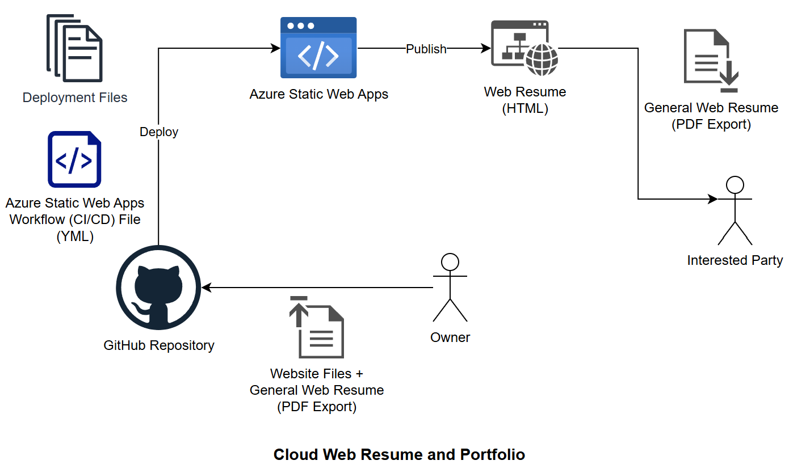
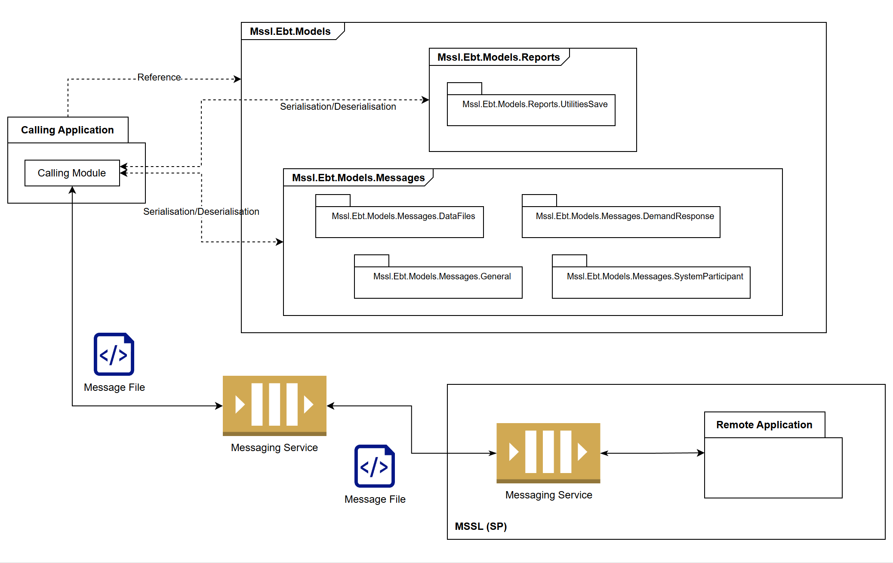
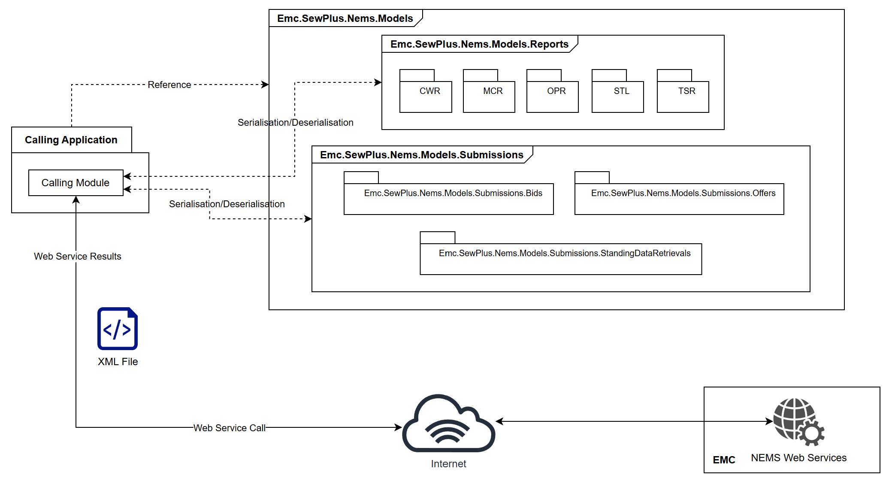

I am a software developer & application consultant in Singapore specialising in software development, testing, documentation, business analysis and application support across multiple industries (education, public sector, airline, financial, lottery, digital advertising and energy).
About Me
Skills
Core Ecosystem
- Microsoft .NET
- C#
Web Frameworks
- ASP.NET
- ASP.NET MVC
API & Integration
- ASP.NET Web API
- RESTful APIs
- JSON
- XML
- XSD
Databases
- Microsoft SQL Server
- MySQL
- SQLite
Tools & Cloud
- Html Agility Pack
- Selenium Web Driver (Browser Automation)
- Git / GitHub
- Sandcastle
- Microsoft Dynamics 365 Finance and Operations
- Microsoft Azure (Vision in Foundry Tools, Data Explorer, SQL, SWA, Storage)
- Amazon Web Services (EC2, S3, RDS, DMS)
Professional Experience
Sembcorp Utilities Services Pte Ltd (Sembcorp Industries Ltd)
2018 – 2026
Application Operations Specialist
- Digital Transformation and Strategy: Supported the systems and applications modernization initiative for core energy billing and renewable solar operations.
- Process Modernization: Upgraded legacy billing applications to align workflows with interacting systems and consistently meet delivery timelines.
- Vendor and Team Collaboration: Partnered with cross-functional teams and external payment vendors to integrate processing workflows and improve stakeholder delivery.
- System Operations and Disaster Recovery: Managed daily operations, routine maintenance, and system availability updates for the billing platform, including disaster recovery testing.
- Regulatory Compliance and Testing: Enhanced and maintained solar irradiance applications across commercial and industrial sites, coordinating directly with the Energy Market Authority on live site testing and downstream billing handoffs.
Smartidea Pte Ltd
2014 – 2018
Software Developer
- Full Lifecycle Engineering: Developed, operated, and maintained new and existing software systems supporting the digital advertising infrastructure through all stages from proof of concept to production support.
- Analytics Platform Development: Partnered with strategic planning teams to build an internal data platform tracking gaming metrics and operational statistics for sales and business development positioning.
- Payment Integration Infrastructure: Designed and implemented a centralized corporate payment library that integrated with merchant bank gateways to standardize cross-platform transaction workflows.
- Technical Feasibility Research: Conducted exploratory research, investigative technical analysis, and prototype development to validate system feasibility for stakeholders prior to major project investments.
- System Operations and Maintenance: Managed daily operations and backend process maintenance for the company's SEO platform to ensure consistent system availability and uptime parameters.
Earlier Professional Experience
Singapore Pools (Private) Limited
2012 – 2014
Applications Analyst
NCS Group
2009 – 2011
Consultant, Application
Singapore Computer Systems (SCS) Ltd (NCS Group)
2008
Application Specialist
Alcatel-Lucent Enterprise ‐ Singapore ALE Pte. Ltd.
2007 – 2008
Software Developer
A-Control Pte Ltd
2005
Software Engineer
SATO Asia Pacific Pte. Ltd.
2002
Programmer
Beca
2000 – 2001
Programmer
Personal Projects
Cloud Web Resume and Portfolio
2026
Technological Stack: Azure Static Web Apps, GitHub, GitHub Actions, HTML5, CSS3, JavaScript
Showcase: 💻GitHub Repository

- Project Objective: Built a practical, hands-on web application to bridge the gap between cloud theory and real-world deployment, successfully demonstrating the ability to navigate the Azure ecosystem, manage cloud resources, and orchestrate cloud hosting workflows in preparation for the AZ-901 certification.
- Front-End and Deployment: Designed a fully responsive web resume using optimized HTML5 and CSS3, deploying it globally via Azure Static Web Apps (SWA) to ensure low-latency delivery and reliable hosting architectures.
- Cloud Security: Adopted robust defence-in-depth strategies to secure the application footprint, integrating custom headers and configurations to protect the website from aggressive scrapers, crawlers, and automated bots.
- DevOps and CI/CD: Established an automated continuous integration and continuous deployment (CI/CD) pipeline by linking a GitHub repository to Azure SWA, configuring GitHub Actions workflows to trigger seamless cloud deployments on every code commit.
MSSL EBT System Data Message Model and Interface Definitions
2026
Technological Stack: C#, XSD, XML Serialisation, .NET Standard, .NET Core, NuGet, Sandcastle, GitHub
Showcase: 🌐Project Link

- Project Objective: Developed and published an open-source energy market developer class library distributed via NuGet to streamline B2B integrations with Singapore's Open Electricity Market (OEM) infrastructure.
- Domain Modelling: Programmed domain-specific data models strictly conforming to the Market Support Services Licensee (MSSL) Electronic Business Transaction (EBT) standards.
- System Architecture: Engineered a robust multi-targeted architecture natively supporting a vast range of environments, including legacy .NET Framework (3.5 to 4.8.1), .NET Standard (2.0/2.1), and modern .NET platforms (.NET 5.0 through 11.0).
- Data Engineering: Developed strongly typed processing structures designed for high-volume XML messaging and compressed Base64/ZIP/CSV utility billing telemetry.
- Developer Extensibility: Leveraged custom interfaces defined within the package to enable energy sector developers to build tailored data streaming and parsing workflows.
- Technical Documentation: Maintained comprehensive public developer documentation and API reference materials via GitHub Pages and Sandcastle.
EMC NEMS Data Services Model Definitions
2026
Technological Stack: C#, XSD, XML Serialisation, .NET Standard, .NET Core, NuGet, Sandcastle, GitHub
Showcase: 🌐Project Link

- Project Objective: Developed and published an open-source .NET class library that provides strongly typed model definitions for data services within the National Electricity Market of Singapore (NEMS) system managed by the Energy Market Company (EMC), acting as a data wrapper for the official NEMS Data Services Specification.
- Strongly Typed Architecture: Designed strongly typed classes and enumerations to process complex EMC Download Reports and Submission messages, ensuring compile-time type safety and minimizing system runtime errors.
- Flexible Serialisation: Implemented robust XML serialisation and deserialisation architectures, enabling downstream developers to process real-time market telemetry — including Uniform Singapore Energy Price (USEP), demand, and reserve data — via granular individual types or broad category classes.
- Cross-Platform Compatibility: Engineered the deployment package to support a comprehensive ecosystem of target frameworks, natively multi-targeting .NET Standard 2.0/2.1, modern .NET (Core 3.0 through .NET 11.0), and legacy .NET Framework 4.0+.
- Technical Documentation: Generated comprehensive API reference manuals and code architecture breakdowns using Sandcastle to lower onboarding friction for external integrating developers.
Professional Development
AZ-900 Microsoft Azure Fundamentals
2025
WSQ ICT-DIT-4020-1.1 Cloud Computing-4
Issued by Tertiary InfoTech Pte. Ltd.
AI-900 Azure AI Fundamentals
2025
WSQ ICT-TEM-3034-1.1 Artificial Intelligence Application in Product Development-3
Issued by Tertiary InfoTech Pte. Ltd.
MECOMS 365 Functional Overview
2024
Ferranti Pte Ltd
Low-Powered Wide-Area Networks
2019
School of Engineering, Nanyang Polytechnic
System Operations on AWS
2015
Amazon Web Services
Education
Monash University
Bachelor of Computing: System Development/Business Systems
Singapore Polytechnic
Diploma in Computer Information Systems
Anderson Junior College
General Certificate of Education Advanced (GCE A-Level)
Anderson Secondary School
General Certificate of Education Ordinary (GCE O-Level)